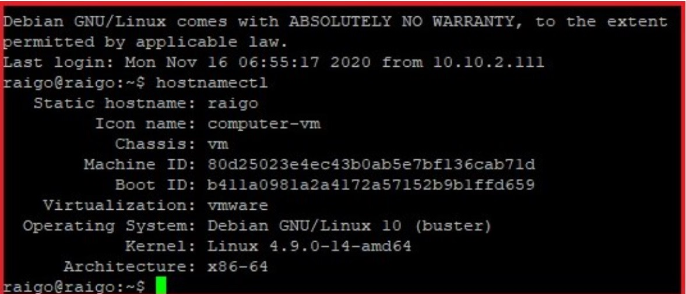

Ubuntu 20.4 Install & Setup
Ubuntu installation and initial setup. Establishing an SSH connection. Backuppc. The activities took place mainly along command lines. Software installation.

Debian 10 CLI Install & Setup
Debian 9 CLI install, upgrade to 10 CLI. Establishing an SSH connection. Backuppc. Software installation eg: spotify.

CentOS Linux 8 GUI Install & Setup
CentOS 8 installation and initial setup. Establishing an SSH connection. Backuppc. Software installation. Installing Zabbix, designed to monitor client / own computers.